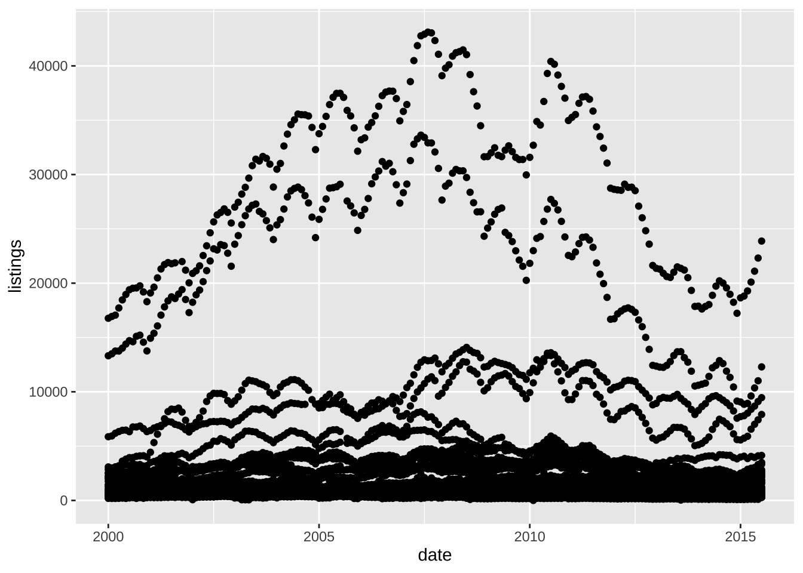
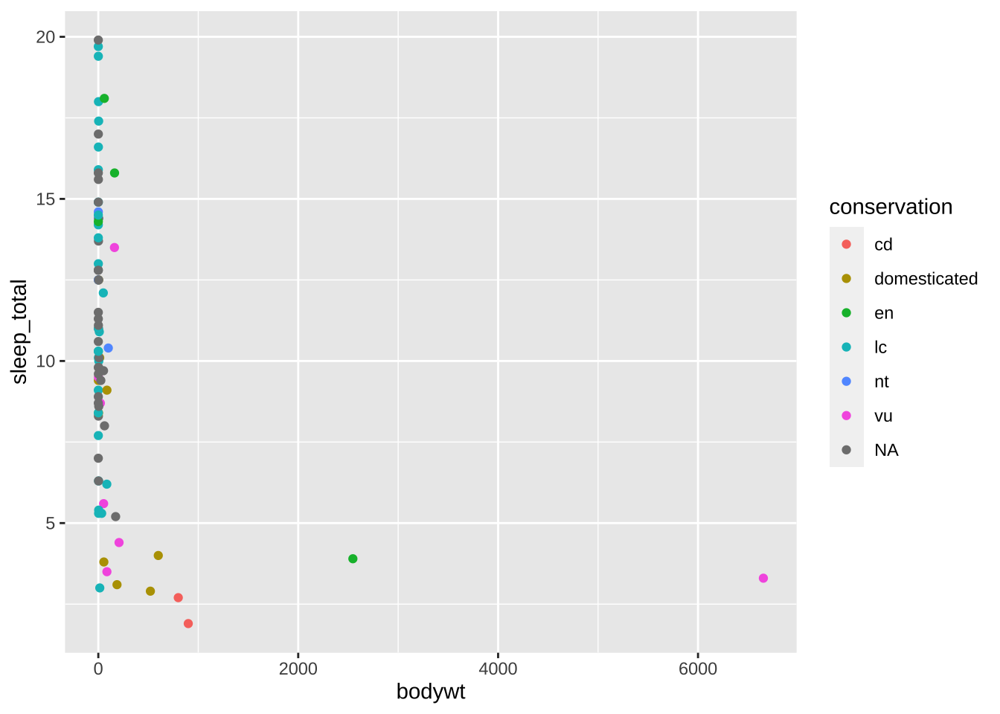
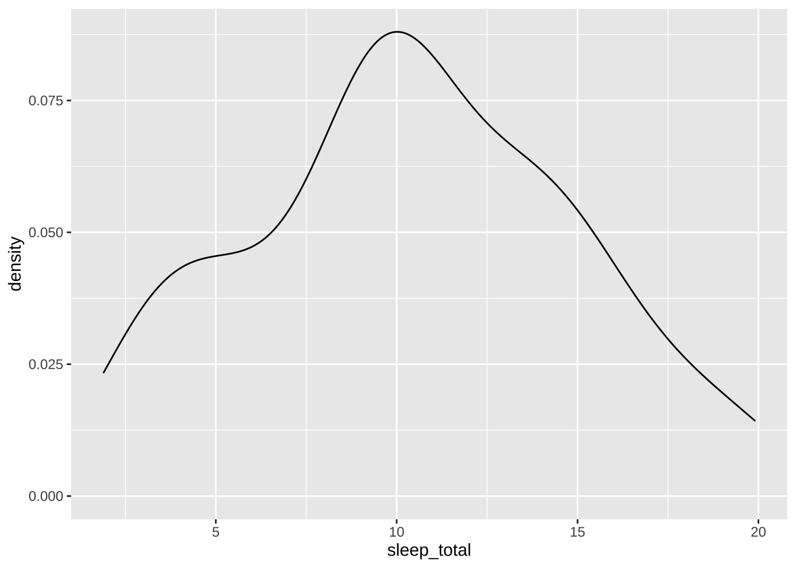

Week 1 - Tutorial
First, let’s install and load ggplot2
We’ll do so by running the following line of code. This line of code, though, is a bit different from most: it installs a new R “package” with specific, additional functionality. Installing R packages is very common. The reason it is different from most code, though, is you typically only want to run it once - after that, the package is installed on your computer, and you don’t need to run it again. For that reason, we’ve commented out this line of code below. You will just have to remove that comment symbol and then click the green arrow to the right to run the code!
# install.packages("ggplot2")Next, we’ll “load” ggplot2, or check it out for use in our current analysis / R session. Run this next chunk the same way as the first:
library(ggplot2)Print a built-in dataset
Next, simply run msleep to view a dataset built-in to R:
msleep## # A tibble: 83 x 11
## name genus vore order conservation sleep_total sleep_rem sleep_cycle awake brainwt bodywt
## <chr> <chr> <chr> <chr> <chr> <dbl> <dbl> <dbl> <dbl> <dbl> <dbl>
## 1 Cheetah Acinonyx carni Carnivo… lc 12.1 NA NA 11.9 NA 50
## 2 Owl monkey Aotus omni Primates <NA> 17 1.8 NA 7 0.0155 0.48
## 3 Mountain beaver Aplodont… herbi Rodentia nt 14.4 2.4 NA 9.6 NA 1.35
## 4 Greater short-ta… Blarina omni Soricom… lc 14.9 2.3 0.133 9.1 0.00029 0.019
## 5 Cow Bos herbi Artioda… domesticated 4 0.7 0.667 20 0.423 600
## 6 Three-toed sloth Bradypus herbi Pilosa <NA> 14.4 2.2 0.767 9.6 NA 3.85
## 7 Northern fur seal Callorhi… carni Carnivo… vu 8.7 1.4 0.383 15.3 NA 20.5
## 8 Vesper mouse Calomys <NA> Rodentia <NA> 7 NA NA 17 NA 0.045
## 9 Dog Canis carni Carnivo… domesticated 10.1 2.9 0.333 13.9 0.07 14
## 10 Roe deer Capreolus herbi Artioda… lc 3 NA NA 21 0.0982 14.8
## # … with 73 more rowsWhat do you notice? What do you wonder? Consider viewing additional rows by clicking the numbers at the bottom of the table; or more rows by clicking the black right arrow at the top.
Add a few thoughts on what you notice and what you wonder after the dashes below! You can add additional dashes, if needed!
Run code to a plot
Here, we will run code to create our first plot.
The ggplot2 package has a function, ggplot(), that we will use.
This function takes arguments for: a) what variables in a dataset correspond to different aesthetic features of a graph, like an x- and y-axis, and b) how the data is represented.
Below, bodywt and sleep_total correspond to the x- and y-axis, respectively, and the values are represented by a point.
ggplot(msleep, aes(x = bodywt, y = sleep_total)) +
geom_point()
Nice job!
Plots can be constructed layer-by-layer; here, let’s add the conservation status of the mammals by color.
See what the conservation statuses represent here: https://en.wikipedia.org/wiki/Category:Biota_by_conservation_status
ggplot(msleep, aes(x = bodywt, y = sleep_total, color = conservation)) +
geom_point()
There are many graphs you can create, from the simple to the complex!
For example, we can quickly look at the distribution of the sleep_total variable with a density plot:
ggplot(msleep, aes(x = sleep_total)) +
geom_density()
Create your own plot!
Now, create your own plot, using the following two code chunks as a foundation or starting points. Look above at the variables in the msleep dataset (where you printed the data) for a reminder of what the dataset includes!
First, can you create a density plot using a different variable (other than sleep_total)?
Try it out below:
ggplot(msleep, aes(x = )) +
geom_density()## Error: stat_density() requires an x or y aesthetic.
Next, can you create a different scatterplot; or a version of one? Try it out by adding different variables for the x, y, and color arguments below:
ggplot(msleep, aes(x = , y = , color = )) +
geom_point()## Error: geom_point requires the following missing aesthetics: x and y
Reach!
Completed the above? Try for a “reach” in one of three ways:
- Add a line of best fit to one of the scatterplots you created above in the blank codechunk below.
To learn how, check out this excellent cheat sheet: https://github.com/rstudio/cheatsheets/raw/master/data-visualization-2.1.pdf
Or consult this chapter on visualizing data with ggplot2: https://r4ds.had.co.nz/data-visualisation.html
- Create a plot of your choice using a different dataset built in to ggplot2.
To see available datasets, run the following code chunk:
data(package = "ggplot2")To load the data, simply type its name. Create your plot in the code chunk below:
- Create a plot using a dataset of your choice. There are a number of datasets built into R; to see all of those on your machine, run the following code chunk (warning - if you’ve installed a number of packages already, you may have a lot!):
data(package = .packages(all.available = TRUE))Create your plot below:
fin
Great job! Once you’ve finished your work, click “Knit” at the top to render a report that you can share; this is how you’ll submit homework for class!
Please submit this rendered HTML file in both a) canvas and b) the #homework-week-1 channel in Slack.
:clap: :clap: :clap: